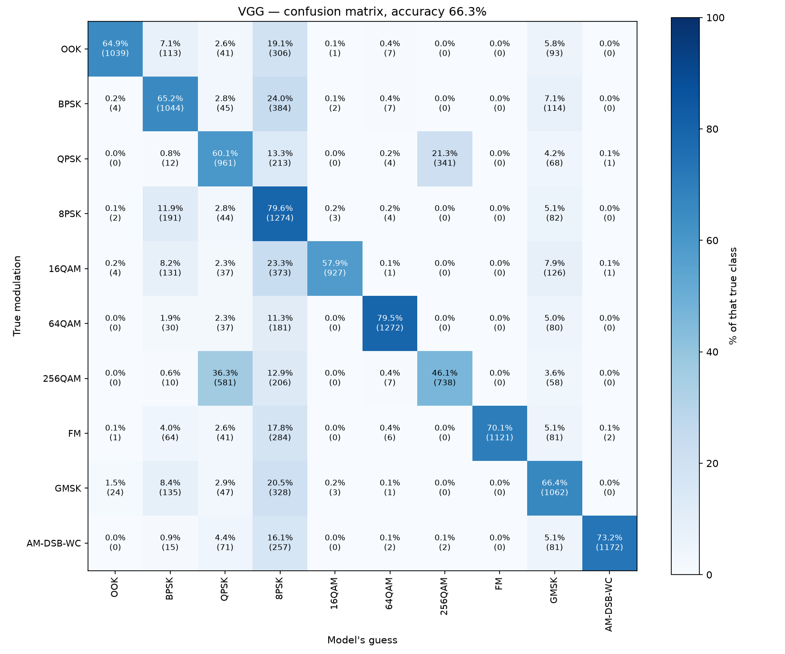
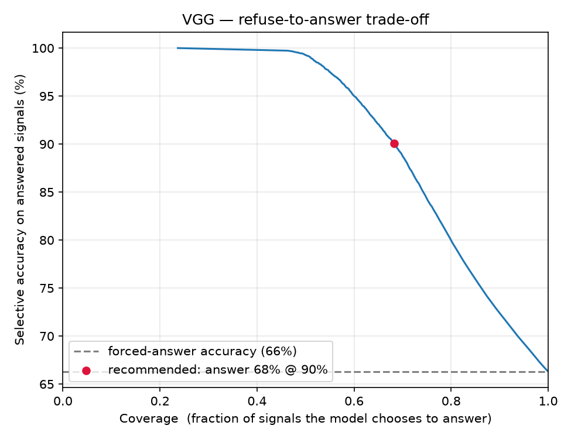
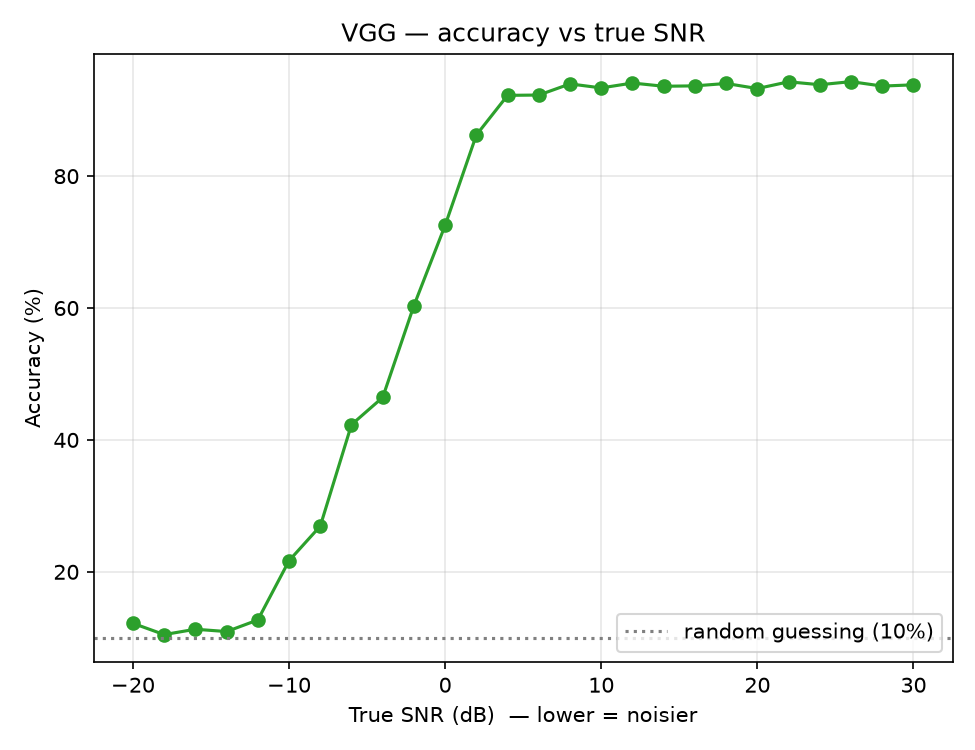
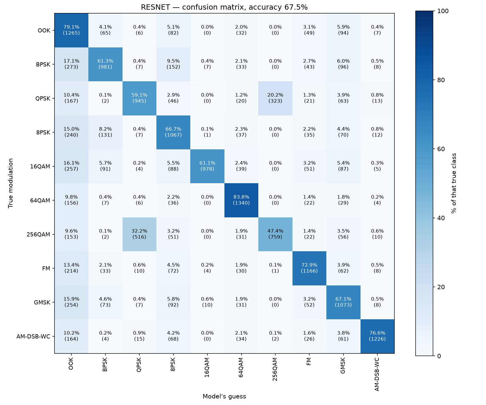

Project report · RadioML 2018.01A · Phase 2
The 3-class warm-up worked, so we broadened the same VGG-style network to 10 modulations across the major signal families — then added a refuse-to-answer gate that lets the model abstain on signals too noisy to classify, instead of guessing.
Phase 2 of 3. The original 3-class warm-up (81.1%) is in the warm-up report; the project later scaled to the full 24-class replication — see the full replication report.
The headline finding: the flat "66%" hides real structure. The model is near-perfect on physically distinct modulations and vague only on look-alike families — and when noise destroys a signal it funnels the junk into a single "garbage-can" class rather than spreading the error around. Once you can see that structure, the fix is obvious: let the model abstain when it isn't sure. Gated that way, the same 66% model answers 68% of signals at 90% accuracy.
01 · The task
Same problem as before — name the modulation behind a raw 1024-sample I/Q snippet — but now across ten schemes chosen to span the major families. Two of them are deliberate ladders: series where each rung looks more like its neighbour, so we could watch where the model breaks. QPSK / 16 / 64 / 256QAM are the workhorses of real 5G data channels.
| Class | Family | Role |
|---|---|---|
| OOK | amplitude (on/off) | easy anchor |
| BPSK · QPSK · 8PSK | phase-shift keying | PSK ladder — look alike |
| 16QAM · 64QAM · 256QAM | quadrature-amplitude | QAM ladder — look alike |
| FM | analog frequency | easy anchor |
| GMSK | GSM / legacy cellular | — |
| AM-DSB-WC | analog amplitude | easy anchor |
As before, the network sees raw I/Q samples only — no Fourier transform, no hand-crafted features. Chance is now 1-in-10 (10%), not 1-in-3.
02 · The pipeline
data_prep.pymodel.pytrain.pyevaluate.pygate.pyresnet_model.py--model resnet (compared head-to-head in Phase 1).03 · Architecture
Nothing about the convolutional stack changed — that's the point. Broadening from 3 to 10 classes only widens the final softmax layer; everything upstream is identical to Phase 1's VGG.
| Stage | Layers | Output length |
|---|---|---|
| Input | 1024 time-steps × 2 channels (I/Q) | 1024 |
| Blocks 1–7 | each: Conv1D(64, size 3, ReLU) → BatchNorm → MaxPool ÷2 | 512 → … → 8 |
| Flatten | 8 × 64 → one vector | 512 |
| Classifier | Dense 128 (SELU) → Dense 128 (SELU), AlphaDropout | 128 |
| Output | Dense 10, softmax → probabilities | 10 |
159,818 parameters — barely up from Phase 1's 158,915 (only the output head grew).
04 · Training
Accuracy per epoch
64,000 training examples · batch 128 · Adam
05 · Results
Confusion matrix — held-out test set
Rows: true modulation · columns: model's guess · row-normalized

Three findings read straight off the grid:
| Class | Precision | Recall | F1 | Read |
|---|---|---|---|---|
| FM | 1.000 | 0.701 | 0.824 | when it says FM, never wrong |
| AM-DSB-WC | 0.997 | 0.733 | 0.844 | trustworthy anchor |
| 16QAM | 0.990 | 0.579 | 0.731 | precise but under-claims |
| 64QAM | 0.970 | 0.795 | 0.874 | best all-round |
| OOK | 0.967 | 0.649 | 0.777 | trustworthy anchor |
| 256QAM | 0.683 | 0.461 | 0.551 | lost to QPSK confusion |
| GMSK | 0.576 | 0.664 | 0.617 | middling |
| BPSK | 0.598 | 0.652 | 0.624 | PSK-ladder blur |
| QPSK | 0.504 | 0.601 | 0.548 | PSK-ladder blur |
| 8PSK | 0.335 | 0.796 | 0.471 | the garbage-can class |
The model fails gracefully, and it knows when it's unsure: average confidence 0.904 when correct vs 0.305 when wrong, with only 2.9% of errors made confidently. That calibration is what the next section turns into a feature.
06 · The refuse-to-answer gate
Forcing a guess on a signal noise has already destroyed is a mistake. Since the model reports its confidence (the top softmax probability), we let it abstain whenever that falls below a threshold, and judge it only on what it chose to answer. Two numbers describe any threshold: coverage (fraction answered) and selective accuracy (accuracy on those).
Risk–coverage trade-off
Raising the threshold moves left: answer fewer, be right more often

| Min confidence | Coverage | Selective accuracy |
|---|---|---|
| 0.00 (no gate) | 100% | 66.3% |
| 0.50 | 69.5% | 89.2% |
| 0.70 | 60.9% | 94.5% |
| 0.90 | 53.3% | 98.2% |
| 0.99 | 48.2% | 99.5% |
Recommended: at a threshold of 0.53, the model answers 68% of signals at 90% accuracy and abstains on the noisy 32% — versus 66% if forced to guess on everything. The same weights become far more trustworthy simply by letting the model stay quiet when it isn't sure.
07 · SNR validation
This phase finally used the dataset's ground-truth SNR (signal-to-noise ratio) in archive (1)/snrs.npy — the earlier phase had been working around not having it. That lets us prove the gate filters by signal quality, not luck: at the recommended threshold, answered signals have a median SNR of +14 dB and abstained ones −12 dB.
Accuracy vs true SNR
16,000 test examples, grouped by real SNR (−20 to +30 dB)

Why the gate works, in one line: accuracy is set almost entirely by SNR, and confidence tracks SNR — so thresholding on confidence is really thresholding on "is there enough signal here to answer at all?"
08 · VGG vs ResNet
Phase 1 compared VGG and ResNet on the easy 3-class task; here we trained the paper's ResNet (skip connections) on the same 10 classes. The average barely moved — 67.5% vs VGG's 66.3%, just +1.2% — the same tiny gain we saw before. But the confusion matrix tells a more interesting story than the average does.
Confusion matrix — ResNet, held-out test set
Rows: true modulation · columns: model's guess · row-normalized

The headline finding: a different architecture didn't remove the "dump the unclassifiable junk somewhere" behaviour — it only changed where. With VGG the sink was 8PSK; with ResNet it's OOK (BPSK→OOK 273, 16QAM→OOK 257, GMSK→OOK 254, 8PSK→OOK 240, FM→OOK 214…). The garbage-can is not a quirk of one model — it's what any of these networks do when noise has destroyed a signal and they are still forced to pick a class. The gate is the real fix, and it works just as well on ResNet (69.8% answered at 90% accuracy). QPSK ⇄ 256QAM persists too (839 errors vs VGG's 922).
The fair comparison to the paper. Our 66–67% is an average over the whole SNR range, dragging in hopeless −20 dB signals; the paper's 98–99.8% is the peak, measured only on clean, high-SNR signals. Scored the paper's way — on signals at ≥ +18 dB — both our models jump to ~94%. On clean signals the architecture barely matters; ResNet's whole edge lives in the noisy middle.
| Model | All-SNR avg | High-SNR ≥18 dB | Cleanest 30 dB | Gate: answered @ 90% |
|---|---|---|---|---|
| VGG | 66.3% | 93.9% | 93.8% | 68.0% |
| ResNet | 67.5% | 94.1% | 93.4% | 69.8% |
| Paper (24 classes) | — | ~98.3 / 99.8% | — | — |
Reproduce with .venv/bin/python scripts/high_snr.py (scores both models on the clean, high-SNR slice).
09 · Against the paper
| Paper element | Status |
|---|---|
| Raw I/Q input, no expert features | replicated |
| VGG CNN layout (Table III) | replicated — output head 3 or 10 wide |
| ResNet layout (Table IV) | replicated — VGG and ResNet on all 10 classes |
| Training recipe (Adam, cross-entropy, early stop) | replicated |
| Accuracy-as-a-curve vs SNR | reproduced from ground-truth SNR |
| High-SNR accuracy ~98–99.8% | matched shape (~94% at high SNR, both models) |
| Multi-class confusion structure | reproduced (ladders + garbage-can sink) |
| Selective classification (abstain) | added — 68% coverage at 90% accuracy |
| XGBoost baseline | studied only, not built |
| Over-the-air, transfer learning | out of scope (needs SDR hardware) |
10 · Next